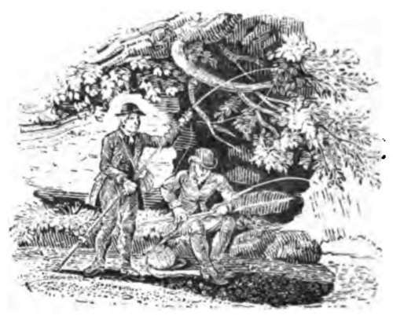
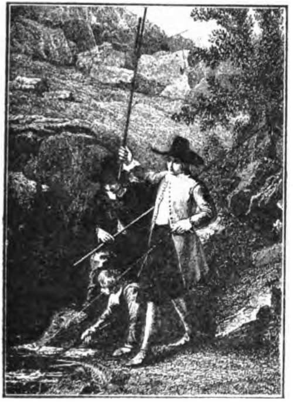

Chapter XIX. Angling For Tench
Description
This section is from the book "Fishing", by Horace G. Hutchinson. Also available from Amazon: Fishing.
Chapter XIX. Angling For Tench
If tench would take the fly like other of the so-called coarse fish it would be introduced into waters all over the country, as it is a handsome, vigorous fish, which fights well for liberty when hooked. I have enjoyed many a day's tench fishing, using very fine tackle and a fly-rod, and although fine tackle is not often necessary, there is much more sport in playing a 2 or 3 lb. tench on the trout rod and cast. No fish varies more in appearance from different waters than the tench. I have taken them from some ponds quite black, with no colour except in the brilliant little red eye, and if I had only seen such tench I should have got a very unfair and erroneous idea of the appearance and nature of the fish. In other waters of better quality, fed by springs and more open to the air and sunshine, I have caught magnificent tench of a rich golden bronze, showing olive tints and dark shadings and wonderful rosy reflections from the small scales seen through the transparent soft enamel which covers the fish. The tench has the reputation of being a slimy fish; and so it is in some poor, dark, stagnant waters, but in clear good water the mucous covering is more like a soft transparent varnish. The scales appear to be much smaller than they really are, they being long and narrow and rounded at each end, with only the end showing on the fish, quite different from other fish scales. As regards the shape, I have a brace caught in the King's Fleet, near Felixstowe Ferry, which are exactly like short thick Wick trout; I have seen others which were as long and not half as deep. As a rule, the females are much handsomer than the males. His Honour, Judge O'Connor Morris, has a lake holding large tench. He kindly sent me the two largest he could catch this (1892) season; they were both over 3 lbs., very dark and rather lanky fish. The eye of the tench is very striking, not large, but to me it always seems to have the most intelligent look about it; with the brilliant gold-red iris, it seems to appeal to you, and I have often put back a fine fellow after admiring its rounded contour and rounded, dark, strong fins, which stand out from the body in vigorous muscular tension. A peculiarity of the ventral fins of the tench is that the second ray is very thick and bowed in the males when mature, and stands out almost at a right angle from the body; in the female it is not larger than the other rays. Like the carp, the tench retires into the mud in the winter. It is very prolific, the small light yellow eggs numbering-in a 3 or 4 lb. fish-from two to three hundred thousand, are laid on water plants, and hatch out in a few days. In Germany the flesh of the tench is highly esteemed, and among English admirers I have often heard Mr. William Senior (" Red Spinner") sing its praises as one of the best of fish for the table, if properly cooked and taken from a good water. I was so much pleased with the excellent sport my boys and I had among the fine tench of the King's Fleet, near Felixstowe Ferry, some years ago, that I presented Mr. Cobbold, of Ipswich, who allowed us to fish, with five hundred young golden tench from Germany. I hope they are increasing in size and number in his fine sheet of water.
Tench fishing is very uncertain; in some seasons they feed freely, in others hardly a fish is taken. The late Mr. Charles Bradlaugh, M.P., had some extraordinary takes of tench from the Lea, but as with the Lea barbel, it is very unusual to hear of large catches.
Although one rarely sees tench over 3 or 4 lbs. in weight, they have been taken in this country up to and over 10 lbs. Mr. Alfred Mackrill, who has had very fine catches of tench at Tring Reservoirs, assures me that there are tench there up to 8 lbs. or more. Some years ago I had a small lake well stocked with fish, including fine tench, and I found the best way to fish for them was with two hooks, one baited with a lively marsh worm resting just on the bottom, and the other, baited with brown bread paste, hanging from the fine gut line an inch or two from the bottom, and the float I prefer is a plain goose quill with sufficient shot on the line a foot above the hooks to sink all but the last inch of the float. After ground-baiting with a ground bait made of brown bread, potatoes, and bran, the carefully baited line is cast out, and the rod-an old fly-rod answers admirably-placed in a forked stick stuck into the bed of the lake as far out as one can reach, with another nearer the edge, so that the rod is held out over the water with the butt a foot or so above it, handy to grasp when the quill indicates a bite. Tench do not, as a rule, make long rushes after being hooked, generally it is a series of short but strong vigorous runs in different directions, and as the strain of the rod draws the fish up he continually bores down again, coming up easily for a few feet and then plunging suddenly until quite exhausted. I always use a small hook, as it is more easily taken by the fish and extracted afterwards by the angler. I have learned many a good wrinkle in angling from Walton's very charming work, and although I rarely use scented baits, I have proved by experience that tench are attracted by the smell of tar. On the small lake already referred to I had boats and a punt, the bottoms of which required tarring occasionally. One summer evening, after catching some tench in about ten or twelve feet of water in the afternoon, they went off the feed altogether, and after getting no bites for some time, I went in to dinner, leaving the rod in the punt at the side, with the baits hanging in the water just below the bottom. When I got back I found a tench of about half a pound had taken the worm. I then put the float down almost to the shot, and fished close to the punt, and soon had a much better fish, and they kept on biting until I had to stick a little white feather into the cap of the float to see when I had a bite. I felt certain then that the tench had been attracted to the spot by the fresh tar, and proved it on other occasions, not invariably, but often enough to feel sure there was no doubt about it. Since then, whenever I have gone tench fishing, I have bought of a chemist three pennyworth of oil of tar, a perfectly clear liquid like water, with a strong scent of tar. When ground-baiting I drop two or three drops of this strong spirit on the ground bait and work it in well (it is poison, and burns the skin if you carelessly let it dry on). I do not put the spirit on the baits, as it is too strong to please the palate, and kills the worms, but the tench are attracted to the ground bait and soon find the worm or paste.
The most extraordinary account of a tench that I know is that given by the Rev. William B. Daniel in his capital "Rural Sports," published nearly a century ago. Daniel gives an excellent steel engraving of the great fish. He says:-
"The tench that has occasioned most animadversion is that which the engraving represents. Its history is, that a piece of water at Thornville Royal, Yorkshire, which had been ordered to be filled up, and wherein wood, rubbish, etc, had been thrown for years, was, in November 1801, directed to be cleared out. So little water remained that no person expected to see any fish, except a few eels; yet nearly two hundred brace of tench of all sizes, and as many perch were found. After the pond was thought to be quite free, under some roots there seemed to be an animal, which was conjectured to be an otter; the place was surrounded, and on opening an entrance among the roots, a tench was found of most singular form, having literally assumed the shape of the hole in which he had for many years been confined. His length, from fork to eye, was two feet nine inches; his circumference, almost to the tail, was two feet three inches; his weight eleven pounds nine ounces- and a quarter; the colour was also singular, his belly being that of a charr, or a vermilion. This extraordinary fish, after having been inspected by many gentlemen, was carefully put into a pond, but either from confinement, age, or bulk, it at first merely floated, and at last, with difficulty, swam gently away. It is now alive and well."
The wags of the day made fun of this tench. Here are the three last verses of a poem on " The Tench of Thornville House," by " Nim."
The scullion wench,
Did catch a tench, Fatter than Berkshire hogs, Sir!
Which, pretty soul,
Had made its hole Snug sheltered by some logs, Sir!
Sans water he
Had hVd d'ye see Beneath these roots of wood, Sir !
And there, alack,
Flat on his back, Had lain since Noah's flood, Sir!
Now he's in stew, For public gout, And fed with lettuce-cosse, Sir!
In hopes the town Will gulp him down, With good humbugging sauce, Sir!
Daniel adds, "But, notwithstanding the squibs and witticisms of incredulity, the account is authentic " -and I quite believe it.

Continue to: